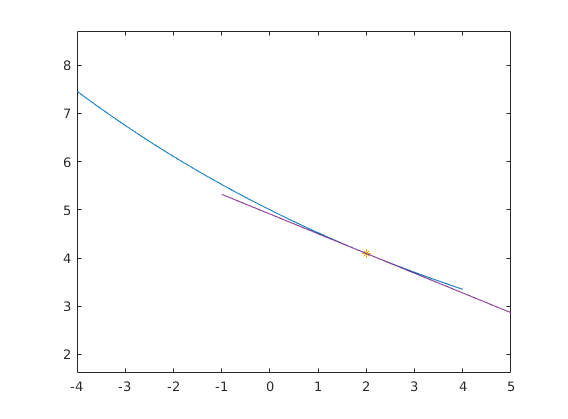
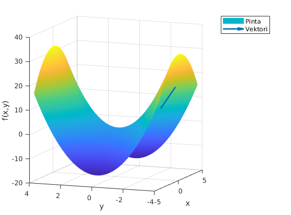
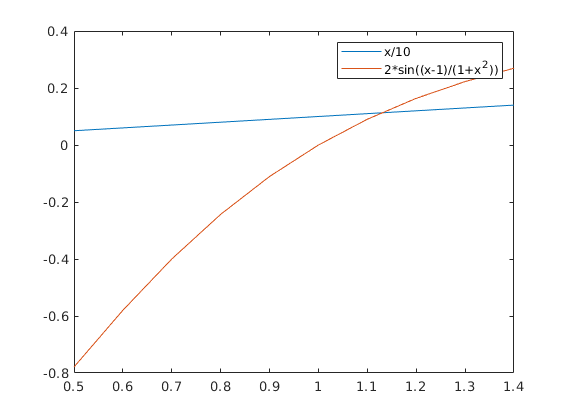
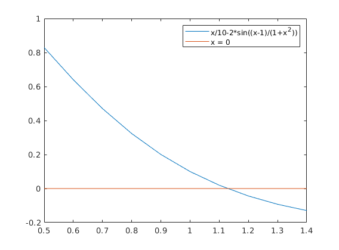

Viikko 11 tehtävät
- Harjoitus 2 perustehtävät
- Arno Törö
Contents
Tehtävä 1
clc;clear;close all
f = @(x) 5.*exp(-0.1.*x);
df = @(x) -0.5.*exp(-0.1.*x);
x = -4:0.1:4;
plot(x, f(x)); axis equal
a = 2;
h = 0.01;
eteenF = (f(a+h)-f(a))/h
taakseF = (f(a)-f(a-h))/h
keskiF = (f(a+h)-f(a-h))/(2*h)
xx = -1:0.1:5;
tg = @(x) f(a) + df(a)*(x-a);
hold on
plot(a, f(a),'*',a+h,f(a+h),'*');
plot(xx, tg(xx))
eteenF =
-0.4092
taakseF =
-0.4096
keskiF =
-0.4094

Tehtävä 2
clc;clear;close all
f = @(x,y) -x.^2+2.*y.^2;
[X,Y] = meshgrid(-4:0.1:4);
Z = f(X,Y);
figure(1);
surf(X,Y,Z); shading interp;
xlabel('x'); ylabel('y');zlabel('f(x,y)');
x0 = [2,-3.2]';
h = 0.05;
v = [-1 2]';
v0 = v/norm(v);
f1 = @(x) f(x(1),x(2));
fv = (f1(x0)-f1(x0-(h*v0)))/h
hold on;
view(-69,9)
quiver3(x0(1),x0(2),f1(x0),v0(1),v0(2),fv,LineWidth=2);
legend('Pinta','Vektori');
hold off;
fv =
-9.7298

Tehtävä 2b
clc;clear
f = @(x,y,z) sin(x*y*z)+log(x*y);
x0 = [1 1 2]';
h = 0.05;
dfx = (f(x0(1)+h,x0(2),x0(3))-f(x0(1),x0(2),x0(3)))/h
dfy = (f(x0(1),x0(2)+h,x0(3))-f(x0(1),x0(2),x0(3)))/h
dfz = (f(x0(1),x0(2),x0(3)+h)-f(x0(1),x0(2),x0(3)))/h
tdfx = @(x,y,z) y*z*cos(x*y*z) + 1/x;
tdfy = @(x,y,z) x*z*cos(x*y*z) + 1/y;
tdfz = @(x,y,z) x*y*cos(x*y*z);
tarkkaDX = tdfx(x0(1),x0(2),x0(3))
tarkkaDY = tdfy(x0(1),x0(2),x0(3))
tarkkaDZ = tdfz(x0(1),x0(2),x0(3))
prosenttiX = ((tarkkaDX-dfx)/tarkkaDX)*100
prosenttiY = ((tarkkaDY-dfy)/tarkkaDY)*100
prosenttiZ = ((tarkkaDZ-dfz)/tarkkaDZ)*100
dfx =
0.0540
dfy =
0.0540
dfz =
-0.4387
tarkkaDX =
0.1677
tarkkaDY =
0.1677
tarkkaDZ =
-0.4161
prosenttiX =
67.7758
prosenttiY =
67.7758
prosenttiZ =
-5.4198
Tehtävä 3
clc;clear;close all
f = @(x) x/10;
g = @(x) 2*sin((x-1)./(1+x.^2));
x = 0.5:0.1:1.4;
figure(1);
plot(x,f(x));
hold on
plot(x,g(x));
legend('x/10','2*sin((x-1)/(1+x^2))');
f0 = @(x) x/10-2*sin((x-1)./(1+x.^2));
figure(2);
plot(x,f0(x));
hold on
plot(x, zeros(size(x)));
legend('x/10-2*sin((x-1)/(1+x^2))','x = 0');
 